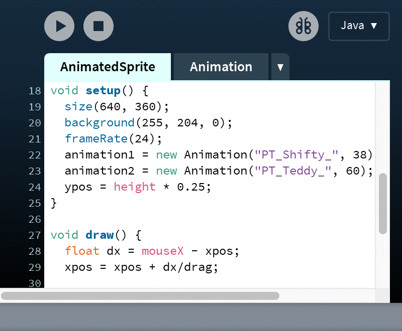

Processing Modes
There are different programming modes that make it possible
to program in different ways. The Java mode is the default.
Other modes can be downloaded by selecting "Add Mode..."
from the menu in the upper-right corner of the PDE.
For example, in the Python mode, even the previous
AnimatedSprite example is written in Python.
|  |